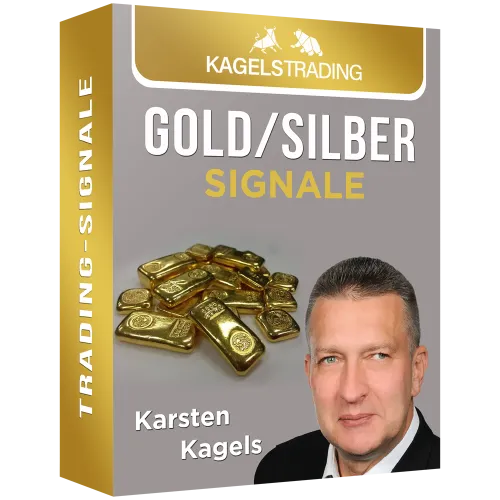

Inner Circle Mitgliedschaft. Trading & Investment Gruppe
Produktprofil · Marktplatz-Daten 2026-10-14 · Verkaufsseiten-Recherche 2026-10-14 · Kategorien: Trading Products, Business & Investment
- Inner Circle Mitgliedschaft. Trading & Investment Gruppe ist ein/e Mitgliederbereich & Videokurs in Trading Products und Business & Investment, vertrieben über den Digistore24-Marktplatz von Anbieter LebensfrohLLC, gelistet seit 2023-06-10.
- Listenpreis $110.76 (subscription) — Checkout, Auslieferung und Rückerstattungen laufen über Digistore24 selbst, nicht über den Anbieter.
- Käuferschutz: keine standardisierte Garantie-Formulierung gefunden — Rückerstattungsbedingungen vor der Zahlung auf der offiziellen Seite prüfen.
Interesse an Inner Circle Mitgliedschaft. Trading & Investment Gruppe? Aktueller Preis, Boni und Garantiebedingungen finden Sie auf der offiziellen Seite des Anbieters:
Offizielle Verkaufsseite ansehen
Affiliate-Link (Werbung) — wir verdienen ggf. eine Provision, ohne Mehrkosten für Sie.

Marktplatz-Daten
| Produkttyp | Mitgliederbereich & Videokurs |
|---|---|
| Preis | $110.76 (Subscription) |
| Garantie/Rückgabe | Laut Verkaufsseite des Anbieters — vor dem Kauf auf der offiziellen Seite prüfen |
| Anbieter | LebensfrohLLC (gelistet seit 2023-06-10) |
Marktplatz-Beschreibung des Anbieters
Du suchst nach einer Trading Gruppe für Kryptowährungen, die seriös und etabliert ist? Dann hast du sie hier gefunden. Der Inner Circle von Christoph Neuwirth beinhaltet nicht nur Trading Signale für jedermann, sondern auch NFTs, Launchpads, Launchpools, unzählige Anleitungen, PDFs, Tutorials, Video-Serien für die Mitglieder und noch viel mehr. Somit ist der Inner Circle für alle geeignet: Einsteiger und Fortgeschrittene | Jung und Alt. Konditionen für Partner: 20% Provision als Passiv-Einkommen (monatlich) Lebenslange Provisionsszahlungen für die Monatsbeiträge deiner geworbenen Kunden Hohe Anmelde- & Teilnehmerquote Die Zufriedenheit ist sehr hoch! 93% aller Mitglieder bleiben bisher nach Anmeldung im Inner Circle enthalten und damit zahlendes Mitglied Jederzeit deutscher Support für Affiliates
Von der Verkaufsseite des Anbieters
Seitentitel: Inner Circle Gruppe | Exklusive Trading & Investment Signale - Christoph Neuwirth
Hauptüberschrift
Christoph Neuwirth
Inner Circle Gruppe | Exklusive Trading Investment Signale
Abschnitts-Überschriften
- Das wirst du in diesem Kurs lernen:
- Anforderung:
- Kursbeschreibung
- Teilnehmerfeedback
- Weitere Kurse
- Der ultimative Drop Servicing Meisterkurs
- Trading Bots: Kryptowährungen automatisiert handeln
- Speed Reading: Schneller lesen – mehr merken und verstehen
Einstiegstext
Dieser Inner Circle ist ein exklusives Angebot , das dir hilft, erfolgreich in den Kryptomarkt zu investieren und zu handeln. Alles, was es braucht, um lebensverändernden Reichtum zu generieren, ist EIN Bullenmarkt, in dem du alles perfekt nach der ultimativen Blaupause machst.
ABER , in dieser VIP-Gruppe wirst du nicht nur im Bullenmarkt Geld verdienen. Du wirst auch vom Bärenmarkt profitieren können. So oder so, ob Krypto steigt oder fällt, du wirst eine Rendite erzielen!
Du wirst von Krypto-Experten und denjenigen lernen, die dank der Blockchain-Technologie Generationen von Vermögen geschaffen haben!
✅ Long- und Short-Strategien ✅ Präzise Trading-Signale zum Kopieren (inkl. TP/SL)
Preisangaben auf der Seite: €99,00
CTA-Buttons: „Startseite"
Recherche-Methode: rohes HTML · 929 Wörter · Qualität: rich · recherchiert am 2026-10-14. Vollständige Recherche-Datei (MD) ↗
Wie Produkte dieser Art geliefert werden
Allgemeiner Hinweis zu diesem Produkttyp (keine anbieterspezifische Anleitung): Videokurse laufen über einen Mitgliederbereich: nach dem Checkout erhalten Sie Zugangsdaten per E-Mail und können die Lektionen in Ihrem eigenen Tempo streamen. Für die genaue Anwendung von Inner Circle Mitgliedschaft. Trading & Investment Gruppe sind die offizielle Verkaufsseite und die enthaltenen Materialien maßgeblich.
Gut zu wissen
- Keine Garantie-Formulierung in unserer Recherche gefunden — bestätigen Sie das Rückgabefenster auf der offiziellen Seite, bevor Sie kaufen.
Was ist Inner Circle Mitgliedschaft. Trading & Investment Gruppe?
Inner Circle Mitgliedschaft. Trading & Investment Gruppe ist ein/e mitgliederbereich & videokurs in der Kategorie Handelsprodukte des Digistore24-Marktplatzes, veröffentlicht von Anbieter LebensfrohLLC und im Verkauf seit 2023-06-10. Der Anbieter beschreibt es so: "Du suchst nach einer Trading Gruppe für Kryptowährungen, die seriös und etabliert ist? Dann hast du sie hier gefunden. Der Inner Circle von Christoph Neuwirth beinhaltet nicht nur Trading Signale für jedermann, sondern auch NFTs, Launchpads, Launchpools, unzäh" (Marktplatz-Beschreibung des Anbieters, leicht gekürzt).
Inner Circle Mitgliedschaft. Trading & Investment Gruppe Preis: was Sie zahlen
Der Marktplatz listet Inner Circle Mitgliedschaft. Trading & Investment Gruppe zum $110.76 Preis (subscription). Digistore24 fügt im Checkout die gesetzliche Steuer Ihres Landes hinzu — dort sehen Sie den Endbetrag vor der Zahlung. Die Verkaufsseite selbst nennt: €99,00 (Anbieteraussagen — verbindlich ist der Checkout-Betrag). Eine separate Plattformgebühr gibt es nicht; Anbieter können eigene Upsells nach dem Checkout anbieten.
Inner Circle Mitgliedschaft. Trading & Investment Gruppe Rückerstattung und Geld-zurück-Garantie
Wir haben keine standardisierte Garantie-Formulierung auf der Verkaufsseite gefunden. Rückerstattungen für Digistore24-Käufe laufen über die Plattform: Antrag über den Support-Link in Ihrer Bestell-E-Mail, innerhalb des Garantiezeitfensters, das im Checkout angezeigt wird. Praktischer Rat: Entscheiden Sie innerhalb des Fensters — wenn das Produkt unter den Erwartungen bleibt, erstatten lassen statt irren lassen.
Mechanik im Detail: So funktionieren Digistore24-Rückerstattungen.
Für wen ist Inner Circle Mitgliedschaft. Trading & Investment Gruppe geeignet?
Basierend auf der Handelsprodukte-Einordnung und der subscription-Abrechnung richtet sich Inner Circle Mitgliedschaft. Trading & Investment Gruppe an Käufer, die handelsprodukte-Lösungen suchen und ein Budget für einen Premium-Kauf eingeplant haben. Der ehrliche Test ist nicht die Kategorie, sondern Ihre eigene Situation: Werden Sie es realistisch innerhalb des Garantiefensters nutzen? Wenn ja, ist der Preis eine Investition; wenn nein, ist er Ballast — unabhängig von der Qualität.
Ist Inner Circle Mitgliedschaft. Trading & Investment Gruppe seriös? Was Sie vor dem Kauf prüfen
Wir bewerten keine Seriosität — das kann niemand, ohne das Produkt zu nutzen. Prüfbare Punkte, alle auf dieser Seite: die Marktplatz-Historie des Anbieters (im Verkauf seit 2023-06-10), die wörtlichen Verkaufsseiten-Auszüge unten (gekennzeichnet als Anbieteraussagen — deren Werbung, nicht unsere Empfehlung), die Garantiebedingungen im Checkout und die Auslieferungsart. Vorsichtsignale bei jedem Angebot: Countdown-Dringlichkeit gepaart mit vagen Rückerstattungsbedingungen, Testimonials ohne Datum und Anbieterseiten, die den Preis bis zum Checkout verstecken.
Wie kommen Sie nach dem Kauf an Inner Circle Mitgliedschaft. Trading & Investment Gruppe?
Der Checkout läuft über Digistore24. Nach der Zahlung: Videokurse laufen über einen Mitgliederbereich: nach dem Checkout erhalten Sie Zugangsdaten per E-Mail und können die Lektionen in Ihrem eigenen Tempo streamen. Bewahren Sie die Bestell-E-Mail auf — sie ist Ihr Schlüssel zum/d zur mitgliederbereich & videokurs, zu Rückerstattungsanträgen und zum Digistore24-Käufersupport.
Inner Circle Mitgliedschaft. Trading & Investment Gruppe Erfahrungen: so recherchieren Sie richtig
Die meisten „Erfahrungsberichte" zu Marktplatz-Produkten sind Affiliate-Inhalte — einschließlich Seiten wie dieser, die an Käufen mitverdienen. Behandeln Sie jeden Bericht (auch unseren) als Ausgangspunkt und prüfen Sie gegen Primärquellen: die Verkaufsseite des Anbieters, die Digistore24-Rückerstattungsrichtlinie und — für handelsprodukte — unabhängige Communities außerhalb des Affiliate-Ökosystems. Auf dieser Seite sind die Verkaufsseiten-Auszüge unten wörtlich zitiert, damit Sie die Aussagen des Anbieters bewerten können, ohne wegzuklicken.
Wie Sie Inner Circle Mitgliedschaft. Trading & Investment Gruppe sicher kaufen
- Öffnen Sie die offizielle Verkaufsseite und lesen Sie das vollständige Angebot.
- Bestätigen Sie Endpreis und Garantiezeitfenster auf der Digistore24-Kassenseite — sie ist bindend, kein Vergleichsportal.
- Zahlen Sie innerhalb des Digistore24-Checkouts (niemals per Überweisung oder Off-Platform-Links).
- Speichern Sie die Bestellbestätigung; notieren Sie die Rückerstattungsfrist im Kalender.
- Prüfen Sie zügig. Der Digistore24-Käufersupport hilft, wenn der Anbieter nicht reagiert.
Vollständiges Recherche-Archiv für dieses Produkt (Markdown: kompletter Marktplatz-Datensatz + wörtliche Verkaufsseiten-Auszüge): Inner Circle Mitgliedschaft. Trading & Investment Gruppe — vollständiges Datenarchiv (Markdown-Datei: 44934-inner-circle-mitgliedschaft-trading-investment-gruppe.md).
- Listenpreis & Abrechnung — Quelle: offizielle Digistore24-Marktplatz-API, Stand 2026-10-14. Maßgeblich für den aktuellen Preis ist immer die Kassenseite.
- Verkaufsseiten-Zitate — Quelle: https://christophneuwirth.com/lp/inner-circle-gruppe-exklusive-trading-investment-signale/, abgerufen 2026-10-14 (Methode: rohes HTML). Verify: offizielle Seite öffnen.
- Garantie / Rückgabe — vom Anbieter festgelegt; vor dem Kauf auf der Verkaufsseite bestätigen.
- Nicht von uns geprüft: Produktqualität, Ergebnisse, Testimonials — kein Praxistest für dieses Listing durchgeführt.
Häufige Fragen zu Inner Circle Mitgliedschaft. Trading & Investment Gruppe
Antworten aus dem Marktplatz-Snapshot (2026-10-14) und der Verkaufsseiten-Recherche (2026-10-14); Anbieteraussagen sind inline gekennzeichnet.
Was ist Inner Circle Mitgliedschaft. Trading & Investment Gruppe?
Inner Circle Mitgliedschaft. Trading & Investment Gruppe ist ein Angebot des Typs „Mitgliederbereich & Videokurs" im Digistore24-Marktplatz, Anbieter: LebensfrohLLC, gelistet seit 2023-06-10. Eingepflegt unter Handelsprodukte und Business & Investment. Digistore24 wickelt Checkout, Lieferung und Rückgaben ab.
Wie viel kostet Inner Circle Mitgliedschaft. Trading & Investment Gruppe?
Der Digistore24-Marktplatz listet es für $110.76 (subscription). Preise legt der Anbieter fest und können sich ändern — der Marktplatz-Eintrag oben zeigt den Schnappschuss; die offizielle Verkaufsseite zeigt den aktuellen Preis.
Gibt es eine Geld-zurück-Garantie für Inner Circle Mitgliedschaft. Trading & Investment Gruppe?
Unsere Verkaufsseiten-Recherche hat keine explizite Garantie-Formulierung gefunden. Viele Digistore24-Produkte bieten 60 Tage Geld-zurück, aber das legt jeder Anbieter selbst fest — bestätigen Sie es auf der offiziellen Verkaufsseite, bevor Sie kaufen.
Ist Inner Circle Mitgliedschaft. Trading & Investment Gruppe seriös?
Wir bewerten keine Seriosität — wir veröffentlichen überprüfbare Zahlen: Anbieter LebensfrohLLC (gelistet seit 2023-06-10), mit der vollständigen Verkaufsseiten-Recherche archiviert auf dieser Seite (Anbieteraussagen als solche gekennzeichnet). Lesen Sie unsere 6-Punkte-Bewertungsmethode und entscheiden Sie anhand der Zahlen — oder diskutieren Sie Inner Circle Mitgliedschaft. Trading & Investment Gruppe auf GitHub.
Wo kann ich Inner Circle Mitgliedschaft. Trading & Investment Gruppe sicher kaufen?
Nur über die offizielle Verkaufsseite, die auf dieser Seite verlinkt ist (Checkout und Rückgaben laufen über Digistore24). Prüfen Sie dort Preis und Garantie vor der Bestellung. Der Link ist ein Affiliate-Link — der Kauf unterstützt diese Website ohne Mehrkosten für Sie.
Wie erhalte ich Inner Circle Mitgliedschaft. Trading & Investment Gruppe nach der Zahlung?
Der Checkout läuft über Digistore24: Nach der Zahlung erhalten Sie Zugangsdaten und Ihr Abo-Dashboard. Lieferdetails für diesen Produkttyp: Videokurse laufen über einen Mitgliederbereich: nach dem Checkout erhalten Sie Zugangsdaten per E-Mail und können die Lektionen in Ihrem eigenen Tempo streamen. Bei Problemen kann der Digistore24-Käufersupport Ihre Bestellung wiederherstellen.
Alle 50 Käuferfragen zu Handelsprodukte — das komplette Kategorie-FAQ.
Inner Circle Mitgliedschaft. Trading & Investment Gruppe auf Reddit diskutieren
In Community-Threads vergleichen echte Käufer Erfahrungen. Wir verlinken Communities, keine einzelnen Posts — Threads verschwinden, Subreddits bleiben:
- r/Finanzen — deutschsprachige Community mit Diskussionen zu trading products.
- Reddit-Suche nach „Inner Circle Mitgliedschaft. Trading & Investment Gruppe" — Live-Ergebnisse, von uns nicht beeinflusst.
- Top-„Erfahrungs"-Treffer dieses Jahr — selbst nach Aktualität filtern.
Passendes auf Amazon.de
Physische Produkte und Zubehör, die häufig zusammen mit Inner Circle Mitgliedschaft. Trading & Investment Gruppe gekauft werden:
- Marketing Bücher auf Amazon.de — Top-Ergebnisse, Amazon-Ranking.
- Bestseller: Marketing Bücher — live Liste von Amazon, von uns nicht kuratiert.
Werbung: Als Amazon-Partner verdient DigistorePicks DE an qualifizierten Käufen (Partner-tag adminstorede-21). Amazon setzt eigene Preise und Provisionen (niedrige einstellige Prozente — weit unter den 30–75% der Digistore24-Anbieter). Amazon ist ein Convenience-Angebot für Sachprodukte, kein Ersatz für das digitale Produkt oben.
Ähnliche Angebote in Handelsprodukte

Unsere Plattform Affiliateking.net – nutze sie, um zusätzlich zu den Provisionen saftige Zusatzeinnahmen zu kassieren. Hier direkt zur Partnerseite + Werbemitte

Bundle aus mehreren Produkten zum Thema sichere Optionsstrategien. Als Affiliate bewirbst Du ein zentrales Thema – der Kunde durchläuft einen mehrstufigen Conve

TOP-Dauereinkommen! DIE Ausbildung zur Neuen Geldordnung (NGO) und zum Krypto-Handel für den Master - Gewinn am Krypto-Markt. Deine Vorteile als Affiliate: hoch

Vermittle die aktuell schnellste & sicherste (Day)Trader Ausbildung, die im deutschsprachigen Raum angeboten wird. Extrem hohe Nachfrage! Darum wählen unser
Weitere Angebote von LebensfrohLLC

Drop Shipping war gestern - Drop Servicing ist die Zukunft! Verdiene bis zu €200 mit nur einem einzigen Verkauf! Nie mehr Logistikprobleme und lange Lieferzeite

20% Provison v. €297 netto Produkt + Add Ons Hochwertiger, vielverkaufter Kurs nun auch auf Digistore zu finden! Über 7700 glückliche Teilnehmerinnen und Teilne

30% Provison v. €297 netto Produkt + Add Ons Vom Anfänger zum Profi - Lerne profitabel zu traden | Technische Analyse, Trading-Psychologie, Risikomanagement &am

50% Provision + diverse Upsells und AddOns Persönliche Finanzen: Die Anleitung für finanzielle Freiheit Dieser Kurs für persönliche Finanzen wird dir beibringen
Inner Circle Mitgliedschaft. Trading & Investment Gruppe ist auch gelistet in
Business & Investment (606 Produkte)
Ähnliche Preislage in Handelsprodukte

Bewerbe die Copy Trading Masterclass und kassiere 50% Provision ! Ideal für alle, die in dem Bereich tätig sind und / oder im Bereich Geld verdienen. Da es hier

Money Flow Tape zeigt Privatanlegern täglich, wohin das Kapital an den Märkten rotiert — und misst, welche Wirtschaftstermine den Markt überhaupt bewegen. Dazu

Sie suchen nach einem Trading-Partnerprogramm, das seriös ist und regelmäßig wiederkehrende Umsätze bringt? Dann haben Sie mit unseren Gold/Silber Trading-Signa

Exklusiver Premium Tradingservice - Lifetime Provision für Affiliates DAX Professional - Wie unsere Kunden mit einem Zeitaufwand von maximal 5 Minuten am Tag vo
Ähnliche Suchanfragen
Wo Sie es sich ansehen können
Wo Sie es sich ansehen können
Aktuelle Preise, Garantie und Boni finden Sie auf der offiziellen Verkaufsseite:
Offizielle Verkaufsseite ansehen
Das ist ein Affiliate-Link (Werbung) — kaufen Sie darüber, verdienen wir ggf. eine Provision, ohne Mehrkosten für Sie.
Quellen & weiterführende Informationen
- Offizielle Verkaufsseite (aktueller Preis, Garantie, Boni): christophneuwirth.com/lp/inner-circle-gruppe-exklusive-tradi (Affiliate-Link)
- Öffentliche Digistore24-Produktseite: checkout-ds24.com/product/502495
- Vollständige Recherche-Datei (Markdown, versioniert): content/products/44934-inner-circle-mitgliedschaft-trading-investment-gruppe.md
- Affiliate-Supportseite des Anbieters: christophneuwirth.com/affiliate-partner/
- Marktplatz-Kategorie: Handelsprodukte
Wie wir Produkte wie Inner Circle Mitgliedschaft. Trading & Investment Gruppe bewerten
Sechs Prüfungen, ausschließlich mit offiziellen Marktplatz-Zahlen. Die vollständige Bewertungsmethode lesen · unsere Recherche-Standards & Kennzeichnung.
Fragen oder eigene Erfahrungen mit Inner Circle Mitgliedschaft. Trading & Investment Gruppe?
Praxis-Tests veröffentlichen wir erst, nachdem wir ein Produkt selbst gekauft haben — aber Ihre Erfahrung hilft anderen Lesern: Diskussion zu Inner Circle Mitgliedschaft. Trading & Investment Gruppe auf GitHub starten/verfolgen. Falsche Zahl gefunden? Korrektur melden — jede Seite zeigt ihre Datenstände, Korrekturen gelten für die ganze Website.